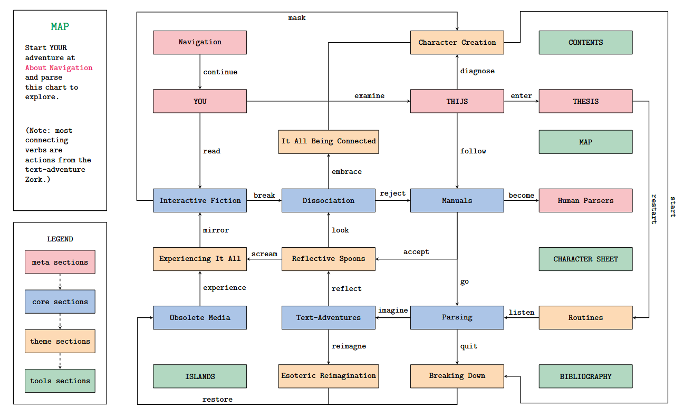

HUMAN PARSER
A pen-and-paper text-adventure
Human Parser is played with 2 people, anywhere, in 30-or-so minutes. Players share a manual and have a character sheet each: one human, one parser. View the individual files below, or download the bundled .zip file.
The Human Parser game is accompanied by a thesis -- a text-adventure itself. This document contextualizes the game while telling an intimate story about dissociation, 'living with a manual' and the inescapable loudness of the question 'who am I'?
Human Parser is a pen-and-paper text-adventure game about (not) understanding yourself. It is a game for 2 people, played anywhere, in 30-or-so minutes. It is a game about dissociation, about how hard it is to understand eachother, and how beautiful it is to try anyway.
Human Parser was developed as part of my graduation research for the Master in Fine Art and Design: Experimental Publishing. Through a series of performative game-like moments and conversation based playtesting sessions, dissociation was explored through the lenses of text-adventures.
Thijs van Loenhout (he / they) is a game maker, multimedia artist and pen plotter enthusiast from the Netherlands. Their practice ranges from printmaking and performance to poetry and game design. Thijs's practice combines shared introspection with interaction in static media to form intimate experiences that explore questions of identity.
With a background in Mathematics and Computing Science, Thijs transitioned into game making and the arts, and is currently completing a Master's in Fine Art and Design. Their graduation project, Human Parser, is a pen-and-paper text-adventure game. Previous projects include an interactive radio play for the Rotterdam-based Radio WORM and a series of group exhibitions around archiving, digital quilting and loitering.
Thijs also explores pen plotters by hosting gatherings and workshops, highlighting their interest in community-based, reflective practices and the interactive, introspective potential in obsolete technologies.